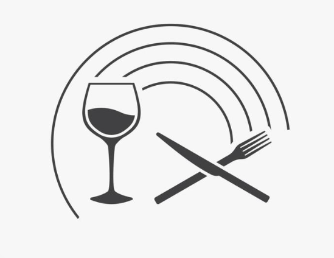

Thinespo
Home
Recipies
Toutorials
Read
Contact
menu
References
Video References
Binging with Babish. (2019).
Binging with Babish: Nachos from The Good Place (plus Naco Redemption).
In YouTube.
https://www.youtube.com/watch?v=LgzudBvmd08
Guga Foods. (2022).
Mexican-Style TACOS from Scratch - Tacos Al Pastor
In Youtube.
https://www.youtube.com/watch?v=DGJJ-7rdpaE
Joshua Weissman. (2022).
The Cheapest Noodle Dish Ever (Chicken Chow Mein) | But Cheaper
In Youtube.
https://www.youtube.com/watch?v=pyMT8drd3lE
Tasty (2018).
A Beginner's Guide To Making Dumplings • Tasty
In Youtube.
https://www.youtube.com/watch?v=EKltq6jpFvk
Tasty (2018).
The Best Homemade Pizza You'll Ever Eat
In Youtube.
https://www.youtube.com/watch?v=sv3TXMSv6Lw
The Stay At Home Chef (2017).
The Most Amazing Lasagna
In Youtube.
https://www.youtube.com/watch?v=zVqunZUuwSs
Vincenzo's Plate (2021).
How to Make CREAMY MUSHROOM RISOTTO Like an Italian
In Youtube.
https://www.youtube.com/watch?v=8ak3lUxy_yU
Marion's Kitchen (2019).
Char Kway Teow - Marion's Kitchen
In Youtube.
https://www.youtube.com/watch?v=3kcLKZkCSgY
Pailin's Kitchen (2014).
Tom Ka Gai Recipe ต้มข่าไก่ - Hot Thai Kitchen!
In Youtube.
https://www.youtube.com/watch?v=9RNxC6w7ERg
Hebbars Kitchen (2020).
pani puri recipe | golgappa | पानी पूरी – गोलगप्पे | puchka recipe | pani poori recipe
In Youtube.
https://www.youtube.com/watch?v=Lno88iU9J4w
The Cooking Foodie (2020).
How to Make Samosa | Perfect Samosa Recipe
In Youtube.
https://www.youtube.com/watch?v=3OZn-iCGf5s
HISTORY (2020).
The First Biryani Is Charred, Smoky Heaven | Ancient Recipes With Sohla
In Youtube.
https://www.youtube.com/watch?v=i6Yr7sDofLc
Reference To Images Used In Site Decoration
EveryPixel (n.d)
Cooking background Images - Search Images on Everypixel.
Find At
https://www.everypixel.com/q/cooking-background?image_id=13295765864066279250
Vecteezy (n.d)
wine glass knife and fork vector illustration on white background. creative icon.
Find At
https://www.vecteezy.com/vector-art/4640098-wine-glass-knife-and-fork-vector-illustration-on-white-background-creative-icon
Cutewallpaper.org. (n.d)
Download /24/cooking-images/2523226183.jpg.
Find At
https://cutewallpaper.org/download.php?file=/24/cooking-images/2523226183.jpg
Cutewallpaper.org. (n.d)
Download /24/cooking-images/47467522.jpg.
Find At
https://cutewallpaper.org/download.php?file=/24/cooking-images/47467522.jpg
Service, G.F.F. (n.d.)
All the Cooking Terms and Definitions You Need for a Day in the Kitchen.
Find at:
https://www.gffoodservice.com.au/idea/cooking-terms-and-definitions/
Vale Informa (2022)
Fundo Social divulga oficinas do mês de março; inscrições começam a partir do dia 3. Vale Informa - Informação que realmente vale!
Find at:
https://valeinforma.com.br/fundo-social-divulga-oficinas-do-mes-de-marco-inscricoes-comecam-a-partir-do-dia-3/
Jutarnji (2022)
Jutarnji list - Vrata METRO centra sada su otvorena svima, pogotovo ljubiteljima dobre hrane i kuhanja.
Find At:
https://www.jutarnji.hr/native/vrata-metro-centra-sada-su-otvorena-svima-pogotovo-ljubiteljima-dobre-hrane-i-kuhanja-15017214
NOTE: Other Images, Documents and Files Used Are Linked With Hyperlinks Which Take You To The Originated Websites.
{kind=link}
{kind=link}